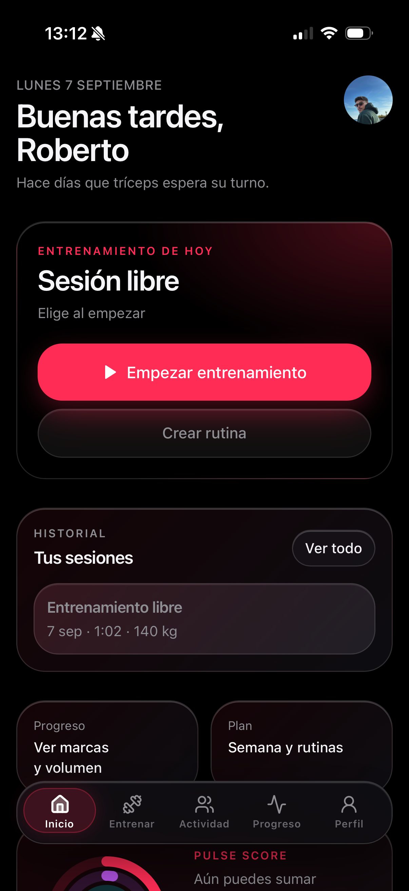
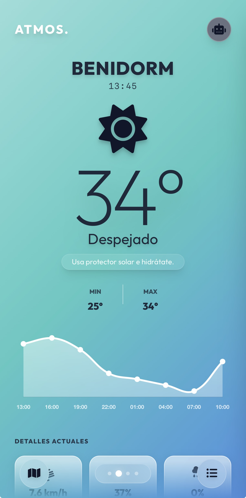

Creo proyectos,
interfaces y sistemas.
Técnico de Sistemas & estudiante de DAM. Creando productos digitales y experiencias creativas desde Benidorm.
Explorando desarrollo web, ingeniería de sistemas, medios digitales y tecnología de videojuegos.
PULSE
Proyecto Personal, Septiembre '26 — Registro ágil de sesiones, volumen de entrenamiento y control de progresión física.
Aplicación de entrenamiento
Registro de sesiones y progresión
Interfaz móvil
Gestión de rutinas y datos
Red social

ATMOS
UNIVERSAE, '25 — Aplicación meteorológica interactiva PWA con estilo Liquid Glass y datos climáticos en tiempo real.
Aplicación meteorológica
Diseño responsive
Datos meteorológicos
Interfaz Liquid Glass
Experiencia adaptada a móviles
